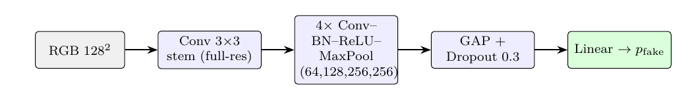
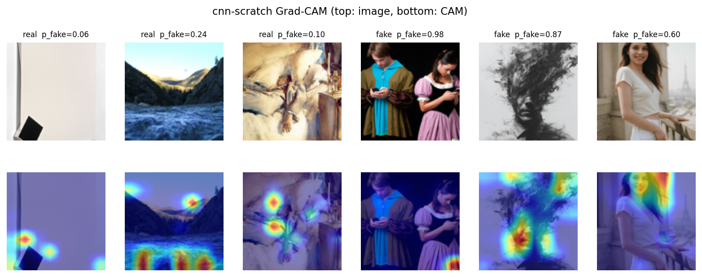
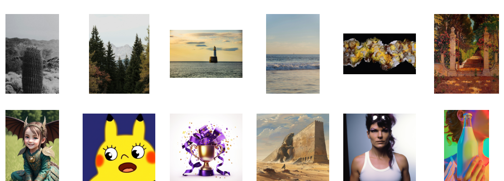
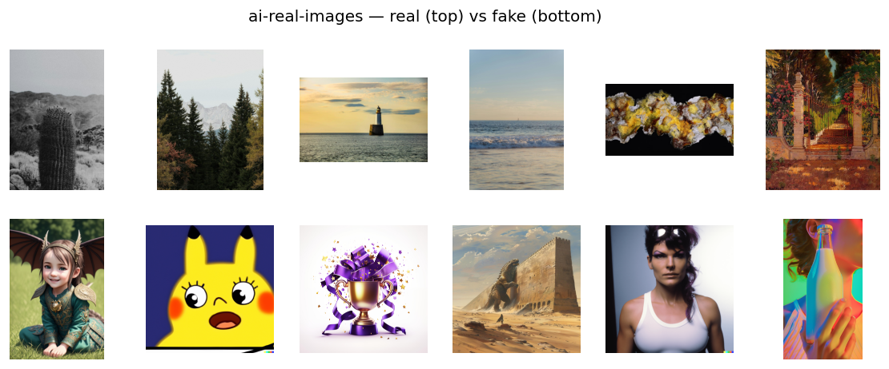
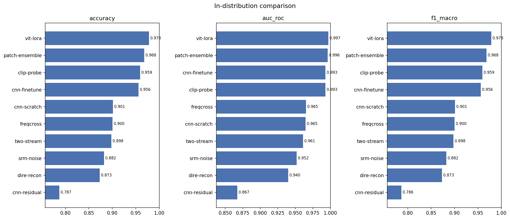
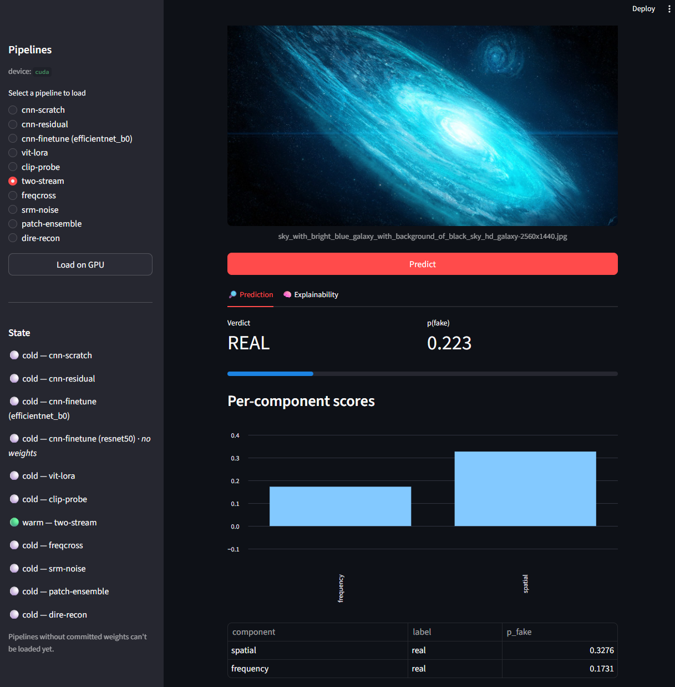

Υπόθεση:
ID AUC
OOD acc
ID acc − OOD

Θεωρητική βάση
Μεθοδολογία εκπαίδευσης

Ενότητα I · Ερευνητικό πρόβλημα
Δέκα detectors φτάνουν έως 0.9972 AUC στο γνώριμο test set. Στο held-out generator benchmark, ο καλύτερος σταματά στο 0.6775 accuracy.

Ερευνητικά ερωτήματα
Συγκριτικό πλαίσιο
Ενότητα II · Δεδομένα και πειραματικός σχεδιασμός
Η συσχέτιση μεταξύ ανάλυσης και ετικέτας μπορούσε να υπερεκτιμήσει την απόδοση. Cleaning, leakage checks και κοινό preprocessing 256² περιορίζουν αυτή την πηγή μεροληψίας.

Υπόθεση:


Ενότητα IV · Πρωτόκολλα αξιολόγησης
Το ID score ελέγχει αν το task είναι learnable. OOD, perturbations και architecture-native explanations ελέγχουν αν το αποτέλεσμα είναι μεταφέρσιμο και αξιόπιστο.

Ενότητα V · Συγκριτικά αποτελέσματα
Το ViT παρουσιάζει την υψηλότερη επίδοση εντός κατανομής, ενώ το native-patch MIL την υψηλότερη OOD accuracy. Η απόσταση από την κατανομή εκπαίδευσης επηρεάζει καθοριστικά τη γενίκευση.
Ενότητα VI · Συμπεράσματα και μελλοντική εργασία
Η εφαρμογή υλοποιεί κοινό inference contract για διαφορετικές αρχιτεκτονικές. Η αξιοποίηση σε πραγματικές συνθήκες απαιτεί διευρυμένη κάλυψη generators, OOD calibration και ανθεκτικότητα στον θόρυβο.
two-stream · persisted inference
